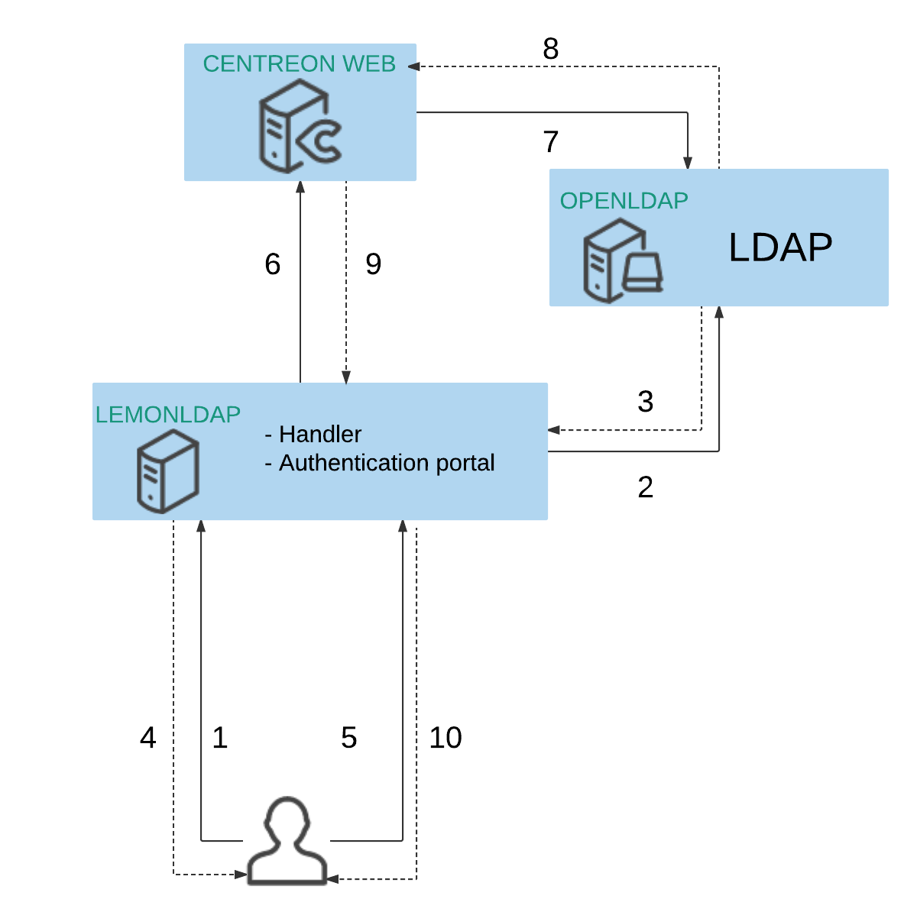
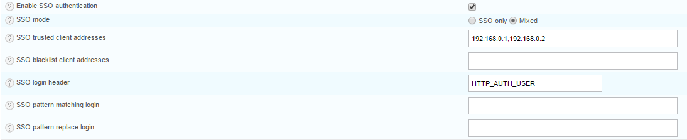

Implement SSO¶
How SSO works with Centreon ?¶
This is an example of architecture with LemonLDAP :
- The user signs in SSO authentication portal
- The authentication portal checks user access on LDAP server
- The LDAP server returns user information
- The authentication portal creates a session to store user information and returns SSO cookie to the user
- The user is redirected to Centreon Web and catched by the SSO handler which checks user access
- The SSO handler sends request to Centreon Web with login header (i.e HTTP_AUTH_USER)
- Centreon Web checks user access by login on LDAP server
- The LDAP server returns user information
- Centreon Web returns information to the handler
- The SSO handler transfers information to the user
How to configure SSO in Centreon ?¶
You can configure SSO in Administration > Parameters :
For more information, please refer here
Security warning¶
SSO feature has only to be enabled in a secured and dedicated environment for SSO. Direct access to Centreon UI from users have to be disabled.